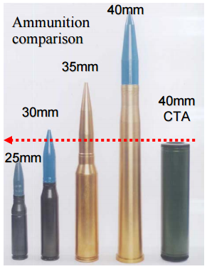

【陆军】【海军】【空军】共军小道消息刷新（2017年第三季）
2017-08-23 05:01:00
原文网址：https://blog.udn.com/MengyuanWang/108908823
21年前李登辉故意挑衅中共的时候，国军在装备的性能上还有明显的优势，这是一般军迷都知道的事实。比较少为人知的是当时共军装备性能最落后的军种，既不是空军也不是海军，而是陆军。那时的中共陆军不但还没有完成机械化，连主战坦克都还停留在50年代的水平，就算能成功渡海，也不是改装了美军70年代电子射控系统的国军坦克的对手。在军改初有成效的今日，再重新评估中共陆军的作战能力，则已经远不只是“非昔日吴下阿蒙”。
50+吨级的99A式在换装最新的第四代APFSDS（翼稳脱壳穿甲）弹之后，性能已经全面赶上60+吨的M1A2SEP，在若干细节（如航程和自卫系统）上还有超越，至于Leopard 2和Leclerc，那根本就只能哄骗中东的土豪。40+吨级的96B式是为大量生產而优化的，以价格低廉为最重要指标，但是在性能上仍然全面压倒国军的任何一型坦克。刚定型的30+吨级15式，曾被称为新轻坦；其实它在用途上和传统的轻型坦克完全不同，不是为了侦察而设计的辅助性车辆，而是一款真正的主战坦克（Main Battle Tank），只不过是针对机动性来进行优化，特别适合山地、丘陵、丛林和海岛作战。它的假想对手是40+吨级的俄制和美系坦克，例如印度/越南的T90S和国军的M60/M48改装版。要以轻了10吨的重量来达到不弱于对手的火力和防护，在技术上必须有一个近乎完整的代差。15式的确应用了目前世界最先进的坦克技术，可以説是在下一代（应该是双人制、无人炮塔设计）坦克出现之前，二战后第三代坦克的终极版。
15式主战坦克；虽然采用105毫米炮，因为弹药先进，穿透力反而超过T90S的125毫米主炮
上周Norinco（北方工业）开了一场外销型装甲与反装甲展示会。在坦克方面，和内销的一样，也是依重量高低有VT4、VT2和VT5三级。然而它们既不是共军竞标落选的型号，也不是自用型的简化版，而是专为外销，采用货架现有零件全新设计而成。换句话説，中共对现代装甲技术，尤其是最关键的高功率柴油机、传动系统和电子观瞄设备，已经完全掌握，可以像生產手机一样随心所欲地组装。而美国现在连开发新的地面战斗车辆，都动辄用上10年、15年，还只能保证会超重并超支，多半不能定型，如此强烈的反差，令人唏嘘。
Norinco还展示了好几型的新式步战车（IFV，Infantry Fighting Vehicle）。因为它们都是外销用的，我就不详细一一介绍。不过其中有一个很有意思，它不是新造的型号，而是一个改装套件，把59式（仿制自苏联T54，即本文第一段提到的50年代水准的主战坦克）车尾改成车头，原车头的装甲拆除，改装车尾门，炮塔则换装为30毫米口径。T54/59式系列是二战后全世界生產数量最多的坦克，现在已经严重过时，能废物利用是个很聪明的主意。这原本是以色列军工企业的发明，现在Norinco也来抢生意了。
59式头尾互换后的“新”產品
共军自用的新式步战车还在测试之中，应该不久之后就会定型量產。目前有照片显示它比现役的04A要厚实得多，是30+吨级的设计。这符合最新的世界潮流，亦即步战车的防护水平大幅提升至接近坦克的水准，以便能更安全地紧随主战坦克进行高速突击（外销型则是为了在中东城市战里承受步兵反装甲武器的打击）。美军仍然只有铝装甲的Bradley步战车，面对中口径炮火时极为脆弱。共军在建军纪念展中，展示了一型新式的40毫米埋头弹火炮，很可能会用在这辆新步战车上，它可以轻易地摧毁Bradley或甚至国军的二綫坦克。
我想一般读者大概还没有听説过埋头弹（CTA，Cased Telescoped Ammunition），所以这里简单解释一下。埋头弹指的是它的弹丸从弹药结构的前端后移到被埋进发射药筒里，整体变成一个粗短的圆柱形。这原本是英法合作的一个项目，法国退出之后，英国人花了14年才终于大功告成，目前正准备用在英军下一代的Ajax步战车上。很多军迷读了英国人的广告文章，以为这型新的40毫米火炮比旧有的30和35毫米炮要轻巧，初速反而更高，是受埋头弹之赐，但这是一个忽悠。其实它性能的改进，主要来自过去4、50年（上一代的中口径火炮是60和70年代的產品）冶金技术的进步；使用埋头弹的唯一好处，是弹丸的长度减半，宽度虽然增加但不多。现代的新式步战车一般使用遥控炮塔，以便空出地方来搭载更多步兵。埋头弹更容易塞进紧凑的弹鼓之中，所以适合搭配步战车使用。现在共军后来居上，很可能早于英国装备这项新技术。
40毫米埋头弹（最右）与传统中口径弹药尺寸对比
中共陆军近年的改进，除了机械化和信息化已大致完成之外，还有立体化仍在初始阶段。这次军改运用数百架（800？）直升机，组建了15个陆航/空中突击旅（空突旅是陆航旅加上一个内建的步兵营）。这在中型区域衝突里基本够用，但是如果要全球部署/用兵，就必须追随美军的建制，那么就还要成长3-5倍。目前制约这个发展的，仍然是中共的涡轴发动机技术。不过这方面的进步似乎稍微好于涡扇发动机，可能在5年内就能随WZ-10的批量生產而解决。
在海军方面，017号航母仍然在舾装之中，据称进度稍微超前，所以年底前试航应该没有疑虑。已经有宣布，它的型号正式改为002型。至于下一艘弹射型航母，最近的一连串消息基本已经确定要放弃蒸汽弹射，改为电磁弹射。其实更准确的説法是原本计划的蒸汽弹射航母被取消了，直接上马下一阶段的型号。这是因为大家早先讨论的018号，是2011年立项，原定2016年开工。电磁弹射器一直到去年才定型，所以根本不可能临时更改。所有有点常识的评论者，包括我在内，都一再强调立项五年之后才做如此重大的更动是不切实际的。我们没有预期到的是，中央军委居然从战略层次，判断不须要在2023年就有第三艘航母服役（很可能是因为Trump的当选，使中国的战略机遇期大幅延展），可以多等4-5年，那么就自然可以跳过蒸汽弹射器和与其配套的战机，长期下来将节省很多维护经费。
我想这个新的战略决定，任何一个军迷都不可能只依理性分析而预期到。但是负负得正，它的结果是有常识的人判断错误，无知的反而误打误撞猜对了。这种情况其实并不罕见，假设一个专家的预测有九成的胜率（已经非常非常了不起了），那么十次中仍然会有一次输给猴子的案例，然而这并不代表那只猴子更有智慧。我的遗憾在于《超大》的大猫似乎因为被猴群奚落而销声匿迹，结果是过去两三个月整个海版没有任何一篇有价值的新消息可读。
前面提到的建军纪念展中，也展示了一艘核子动力电磁弹射的航母模型，其上有三种舰载机：首先是前文提过的预警机，型号已知是空警600。其次是一架隐身飞翼无人机，最近有卫星照片显示一架形似的飞翼正在试飞基地接受鉴定。最后则是海军版的J-20。虽然海军选择J-20在逻辑上是必然的结果，有一些细节仍然值得解释。J-20各项性能都远优于FC-31，价钱基本相当，修改为海军型也更容易些（因为鸭翼布局的低速大迎角可控性极佳，特别适合在航母上降落），但是海军一直拖到现在才间接表态，以致过去几年始终没有内綫消息可以让猴群噤声。其实我们若是从海军的观点来看，完全可以理解：FC-31是厂商自己出钱研发的，虽然是鷄肋，但是J-20研发失败的风险总是有的，既然不须出钱就可以有一个备份，何乐而不为？现在J-20已经在空军服役，证实是极优秀的飞机，而渖飞连J-15的飞控都没能搞好，已经害海军损失了一名舰载机飞行员，即使FC-31现在就可以交机，海军也不会有兴趣了。
航母模型上的J-20，有折叠机翼

航母模型上的KJ600
上周有一位退役海军装备部官员给演讲，透露了几个新消息。我觉得最重要的有两点：第一是095级的排水量为7000吨，并且如同Virginia Class一样使用泵推而不是一般的螺旋桨。其次是证实了共军正在利用常规潜艇（应该是039B/C）的艇壳研发小型核动力潜艇（排水量约3000吨）。我在两年多前曾提过，因为095级的性能（主要是静音航速）仍然赶不上Virginia Class，共军可以利用在西太平洋的守势优势，建造大批廉价的小型核动力潜艇到处布桩，以逸待劳，以量取胜。
095级是这个样子

075级是这个样子
提到潜艇，去年十月，中国科学院上海微系统与信息技术研究所发表了一篇论文，叫做《Development of a squid-based airborne full tensor gradiometers for geophysical exploration》（参见http://library.seg.org/doi/pdf/10.1190/segam2016-13947186.1 ），中文翻译是《基于鱿鱼的机载全张量梯度计，用于地质物理探勘》。看不懂吧？其实他们应该把“squid”写成“SQUID”才对，因为这里它是Superconducting QUantum Interference Device的简写，正确的翻译是“超导量子干涉仪”，这是目前远远最为灵敏的磁场测量仪器，你如果到医院里做核磁共振检查，机器里用的就是SQUID。我们先忽略论文标题里的“地质物理探勘”那部分，一个机载的磁力计有什么军事用途呢？那当然是可以用来探测潜艇的。好，既然SQUID远优于传统的磁力计，那么现代的反潜机一定都用得上吧？这里其实有个很大的问题，就是SQUID太灵敏了，各式各样的杂讯太多，工程上始终无法实用化。一个解决的办法，就是类似相控阵雷达天綫，也把接收器组成一个阵列（不过这里可能是三维阵列），然后用软件对信号筛选、定向。在这个应用上，“张量”和“阵列”是同一个意思。
总之，这篇论文説的是，上海所已经解决了把超导量子干涉仪用在飞机上做“地质物理探勘”的工程问题。目前世界上所有反潜机所装备的磁力计都顶多只有几百公尺的探测范围，这对搜索潜艇来説，基本没用。必须先由声纳监听到目标的大致位置，然后才能用磁力计精确定位。一个实用化的SQUID磁力计会有大约5-10公里的探测范围，而且不论潜艇有多安静，就算停俥，一样无法遁形。目标甚至被侦测到了，都不会有自觉，只有在反潜鱼雷掉到头上，主动声纳在几百公尺（不到一分钟的鱼雷航程）外开始砰砰作响，才会知道大事不妙。
本季讲了很多陆军和海军的事，空军就简单交代一下：最近有传言说H-20会是半飞翼，三发动机的设计。如果属实，我是有点失望的。一方面全飞翼的隐身性更好；另一方面，三发动机代表H-20会小于B-2，那么在航程和载弹量上都会略逊。不过话説回来，共军不像美军一样到处都有海空基地，所以希望轰炸机飞越半个地球做战略性核子打击，原本就不太切实际。H-20可能定位和B-21类似，都是战役级的常规打击手段。
最近传説中的H-20，似乎是这个样子
【后注】我写正文时忘了提，共军的第五艘Zubr已经上了船臺。它的重要性在于它是第一艘自制的Zubr，一旦成功，则共军基本可以无限建造下去。两年前，我已经解释过，Zubr的航程太短，基本只适合臺海。它的批量建造，是对臺湾有针对性的军事建设。